Scholarship & Admission Test (MDIS89)
100% Scholarship & Highest Awardee
I'm Ikshit Sethi. A scholar, builder and researcher working across technology, science and networking.
Explore my work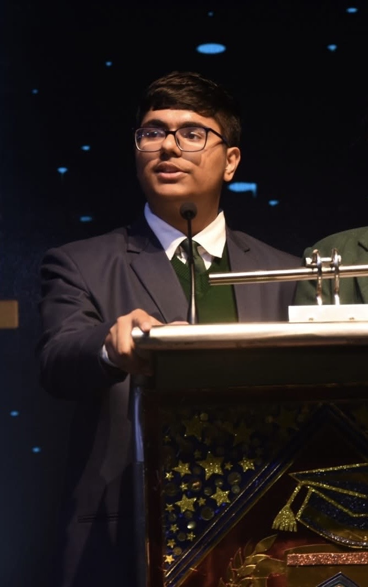
I'm a Grade XI student at Modern Delhi International School, Sector 89, Faridabad, on a 100% merit scholarship. My interests connect mathematics and astrophysics with software, entrepreneurship, constitutional law and international relations. I build digital tools, lead research teams, write about ideas that matter, and help turn conferences and community initiatives into reality.
100% Scholarship & Highest Awardee
100% Scholarship
(Cleared MI, Qualified for OCSE26, Top 25 Ranker, Zonal Excellence & Gold Medal)
(AIR 2, Global Rank 3, Invited to Prague, Czech Republic)
(NCR Rank 7, Cash Prize of ₹11,000)
90%, Net Waiver of ₹2,31,600)
90%, Net Waiver of ₹93,000)
IMO, NSO, NSTSE)
(Qualified for RMO, National & Regional Merit Winner)
(National Merit Winner)
(98%ile+, Cleared MAS, Centre Topper, School Rank 1)
(Level 2 Perfect Score: 60/60)
(Perfect Score: 60/60, International Rank 1)
(99%ile+, International Rank 18, Silver Zonal Medal, School Topper)
(99%ile+, International Rank Below-175)
(AIR 143, AIR 167)
(100% Scholarship, ₹1,00,000 Cash Prize)
(AIR 11)
(5/5 Stars)
Our two-person team, Photoelectric Effect, earned 3rd place in Category C at Physics Brawl Online 2025. Alongside Emon Kancharidasu, I scored 146 marks and achieved All India Rank 2. FYKOS recognized our performance with a diploma and an invitation to Europe’s biggest team physics competition.
The invitation was for 13 February 2026 in Prague, with tuition-free participation and an offer of accommodation for the accompanying programme from 10 to 14 February. A milestone connecting classroom physics with an international scientific community.
View the official Physics Brawl 2025 results
First Academic Proficiency Winner · Rank 1
Receiving the First Academic Proficiency Award from Chief Guest Prof. Dinesh Kumar, Vice Chancellor of Shri Vishwakarma Skill University, and Director Principal Dr. U.S. Verma Sir, along with the esteemed school management, for securing the highest percentage across both branches of the school — 97.56% in the Academic Year 2024–2025. Awarded a cheque of ₹50,000 and the Blue Scholar Badge II as the first prize during the Annual Scholar Badge Ceremony 2025.
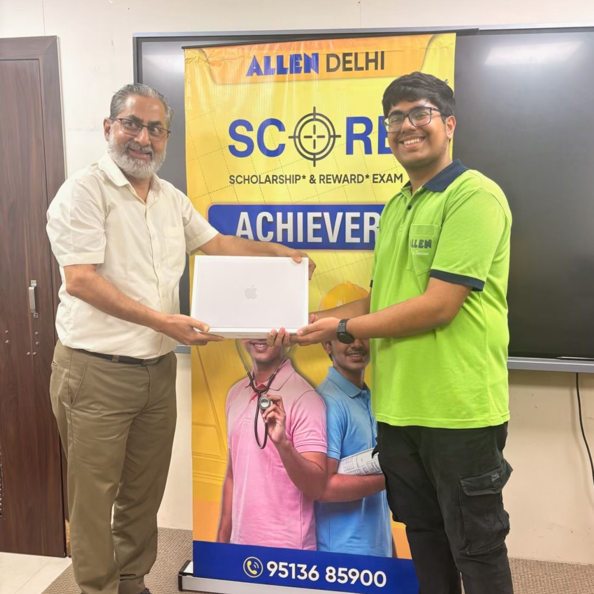
At the ALLEN Career Institute, Delhi SCORE 2026 Felicitation Ceremony, I received the first-prize Apple MacBook for securing the highest cumulative rank among PCM participants across Delhi NCR.
The Scholarship & Reward Exam tested Physics, Chemistry, Mathematics and IQ through 80 analytical questions with negative marking. Top performers progressed from the offline written examination to an elite offline interaction round. I achieved the highest score in both rounds, earning the highest PCM award across the complete selection process.
Beyond the reward, this recognition celebrates the discipline, consistency and preparation behind the result. I am grateful to my parents, teachers and mentors, and to ALLEN Sector 16, Faridabad and ALLEN Delhi, for their support and guidance.
Ranked first across the entire academic cohort of 2025 to 2026 at Modern Delhi International School, Sector 89, Faridabad, amongst all students from Grade II to Grade XII.
During the full school assembly, Director Principal Dr. U S Verma Sir and the school management felicitated me with a medal, prize cheque and gift voucher. The recognition brought together a year of achievement in mathematics, science, computing and international physics competitions.
Additional recognition includes ICSO 2025 — Zonal Medal of Distinction; SASMO 2025 — International Bronze Medal; SEHSS 2025 — National Top 1% and Qualifier · Invited to OCSC 2026; Physics Brawl Online 2025 — 3rd in Category C · AIR 2 · Invited to Prague; NMTC and IOQM — Cleared with National and State Merit recognition.
I am grateful to my teachers, parents, friends and mentors for their guidance and encouragement. I have also been appointed Vice House Captain of Ravi House for the Student Council 2026 to 2027.
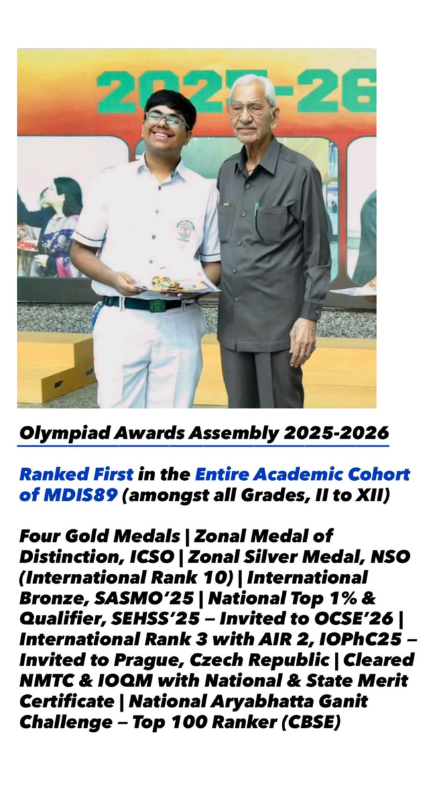
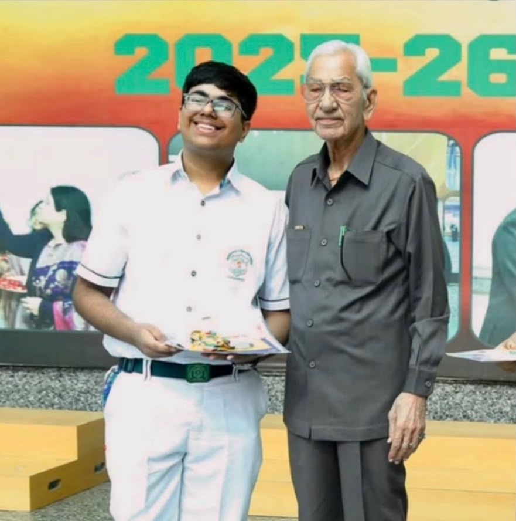
Building systems.
Leading people. Making an impact.
Securing Empathy and Values in Artificial Intelligence
Delivered at Dogra Hall, IIT Delhi on 26 October 2025.
Presented The Vardhan Consolidation on 31 January 2026. Finalist in Co-Founder Catalyst and Startup Clinic, presenting to founders, investors and IIT Delhi students.
Ideas. People. Possibility. Entrepreneurship, technology and cultural communities.
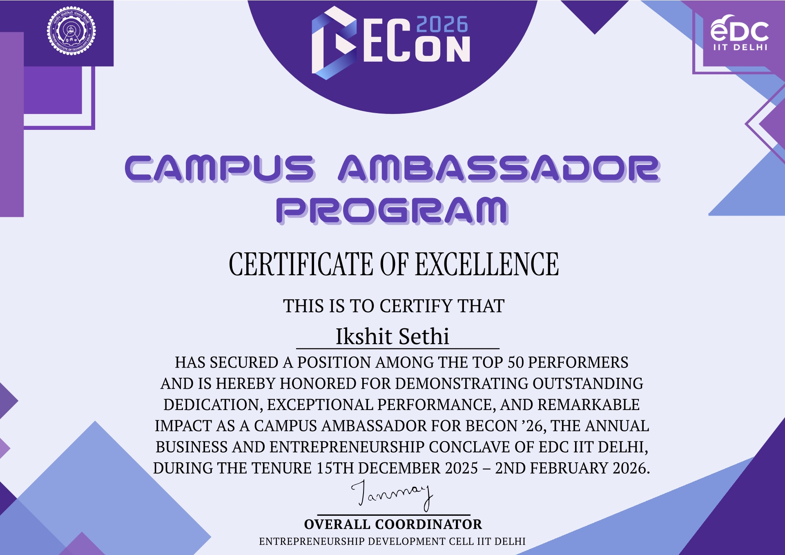
BECon2026 · Top 50 Performers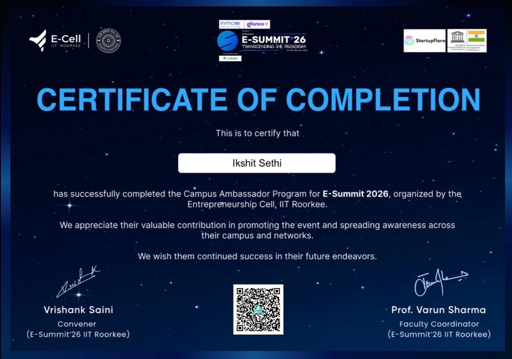
IIT Roorkee · E-Summit Completion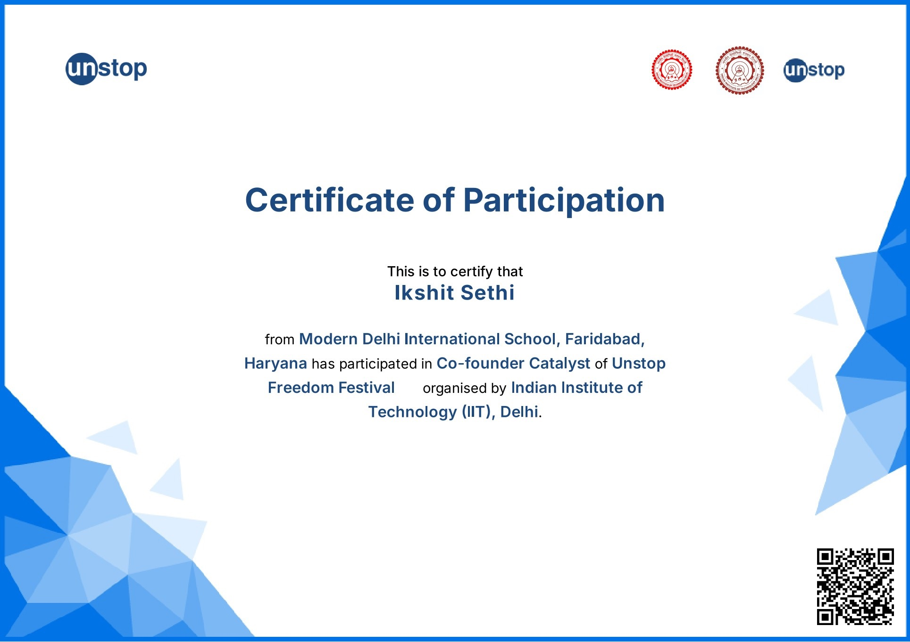
IIT Delhi · Co-founder Catalyst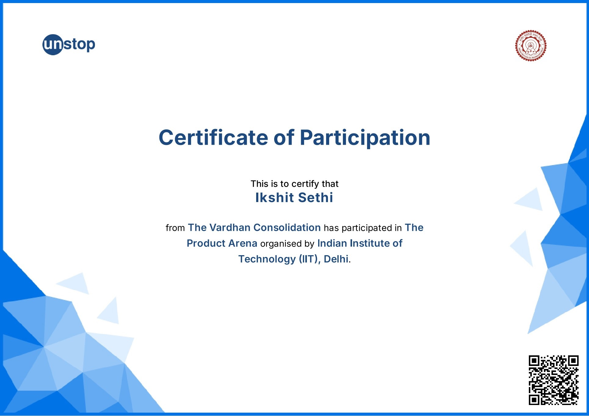
IIT Delhi · The Product Arena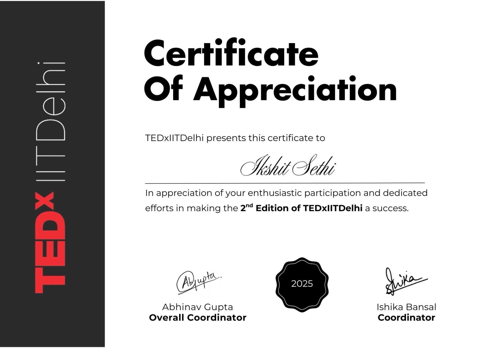
TEDxIITDelhi · Appreciation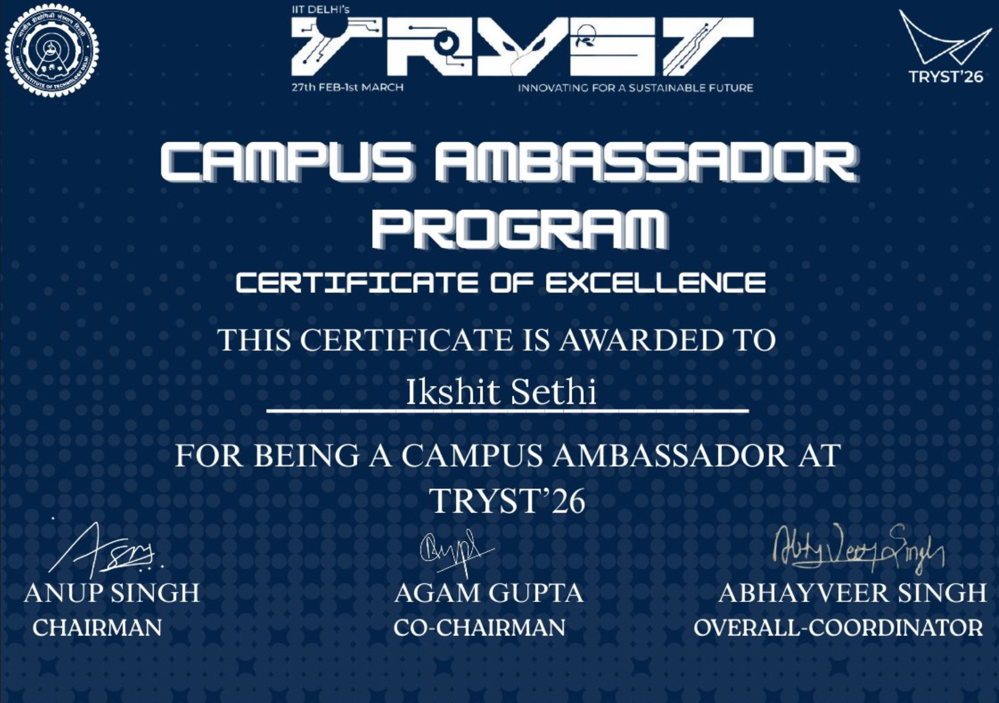
TRYST2026 · Certificate of Excellence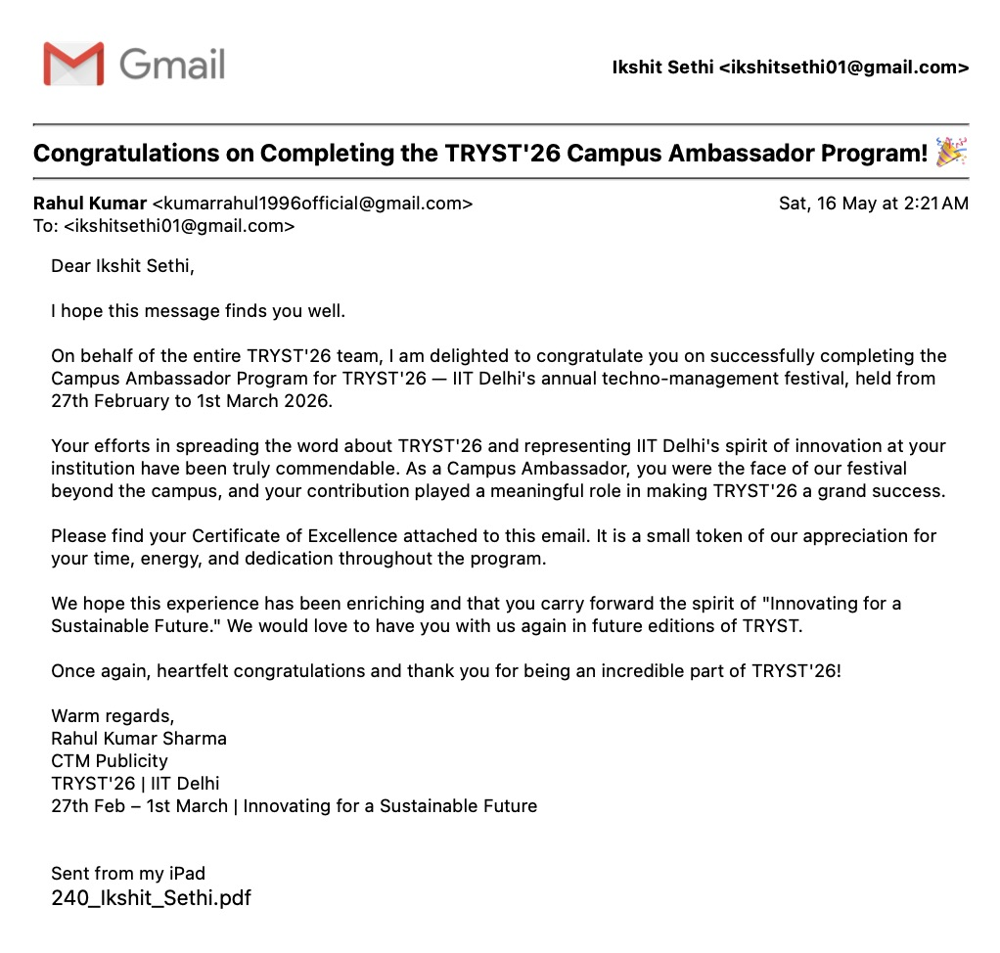
TRYST2026 · Completion Recognition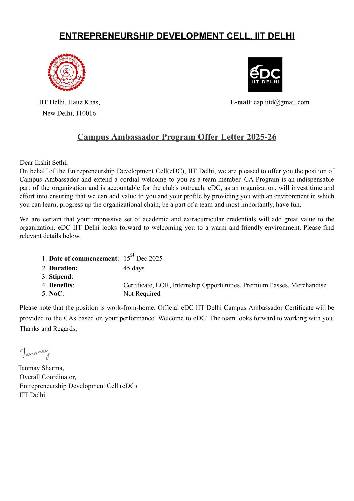
IIT Delhi · Campus Ambassador Offer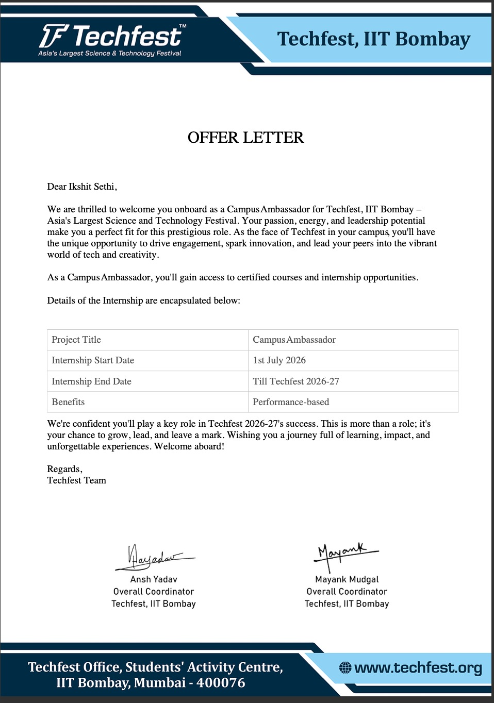
IIT Bombay · Techfest Offer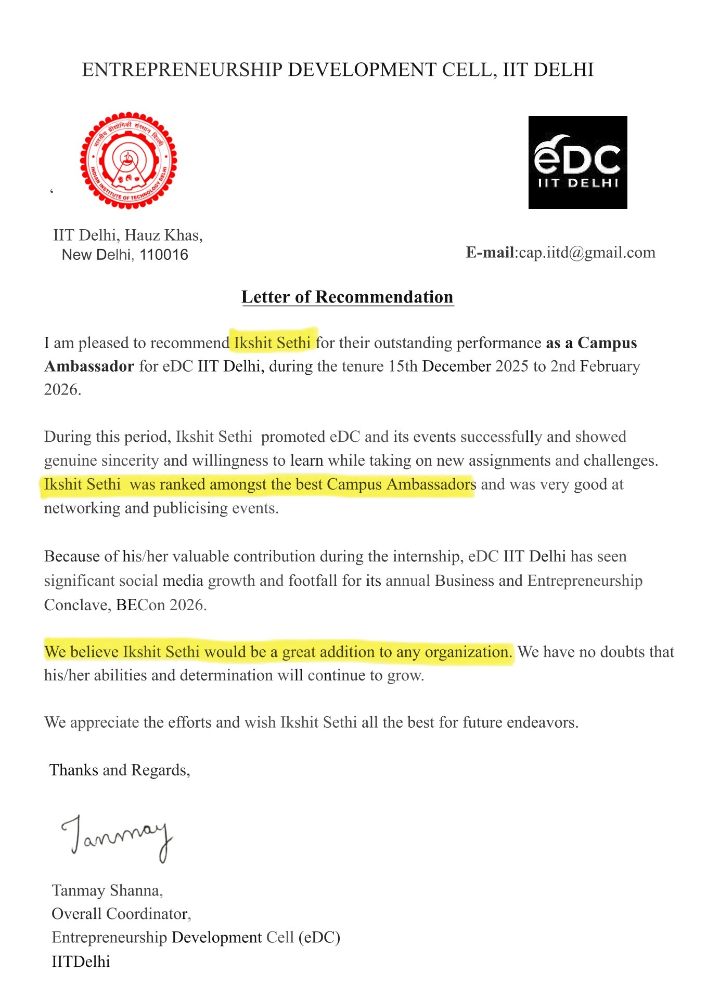
IIT Delhi · Letter of RecommendationDirector of Information Technology. Built and maintained event websites, backend systems, domains, email routing and a custom firewall that blocked seven cyberattacks.
Chief Advisor for the charity football tournament held at Eicher School, Faridabad on 23 August 2025.
Head Delegate, executive board member and conference organizer. Leading teams, facilitating debate and supporting diplomatic learning.
Team Lead, Engineering and Technology Division. Coordinating international research teams, mentoring collaborators and guiding publication readiness. Working within an institution connecting 1,400+ student researchers and 140+ school chapters worldwide.
The International Astronomy and Astrophysics Competition connects students worldwide with astronomy, astrophysics, experimental problems and real research papers. As an International Ambassador, I support this global community of curious young scientists.
Developer at MUNify, contributing tools that improve debates and delegate efficiency. The platform partnered with ten conferences and is available on iOS, Android and laptops.
President & Co-Founder. The Vardhan Consolidation provides a strategic backbone for organisations through advisory services, financial management, legal dynamics and HR support. Our venture was selected for the finals of two flagship events at BECon2026, IIT Delhi: Co-Founder Catalyst and Startup Clinic. I pitched the company to founders, investors and IIT Delhi students, alongside opportunities for direct mentorship and engagement with the startup ecosystem.
Perfect 60/60 in IMO 2023, with school, zonal and international Rank 1. Another perfect 60/60 at IMO Level 2 in 2024, earning Gold Medals of Distinction and Zonal Excellence recognition.
Team Photoelectric Effect placed third in Category C at Physics Brawl Online 2025, with 146 marks and AIR 2. Received the FYKOS diploma and an invitation to Fyziklani 2026 in Prague, Czech Republic.
Qualified for the Regional Mathematics Olympiad through IOQM 2025, earning both National and Regional Merit certificates from Delhi NCR. Also received National Merit in 2024.
Among the North Zone’s Top 25 students in SEHSS 2025. Scored 138/216, cleared MI and earned selection for the ten-day OCSE 2026 Physics camp at IIS University, Jaipur.
Scored 281/320 in TALLENTEX 2025: All India Rank 109, Zonal Rank 25 and State Rank 7. Awarded the maximum 90% scholarship, a ₹2,31,600 fee waiver and ₹7,500 cash award.
Awarded a 100% scholarship through FIITJEE’s Talent Reward Examination, recognizing outstanding academic performance.
International Computer Science Olympiad 2024. Achieved a percentile above 99, a Zonal Silver Medal and School Topper recognition.
Singapore and Asian Schools Math Olympiad 2025. All India Rank 21 and School Topper, recognized with a certificate and medal.
59/60 in February 2026. All India Rank 10, Zonal Rank 2, Zonal Silver Medal, ₹2,500 cash award and Certificate of Zonal Excellence.
Leading Speaker at Debate Club; Conduction at Grand Annual Function; Leading Participant at 10F Assembly; Head Organiser of Student of the Year 2026.
First Academic Proficiency Award for School Rank 1 (₹50,000 cheque); 100% Academic Scholarship with additional fee waivers; Blue Scholar Badge 2; Gold Medal at multiple olympiads; Top Scholar Section; Rank 1 in all Test Series and Scholarship Examinations; SASMO 2025 School Topper and International Bronze Medal; Aryabhatta Ganit Challenge 2025 School Topper; 99.0% Grade X Boards; Perfect 100 in Three Subjects. Skill: Academics.
Leading Speaker at Debate Club; Lead Participant at Grand Annual Function; Member of School Orchestra; Developer of Class 9F Website; Conductor at 9F Assembly; Head Organiser of Student of the Year 2025.
Blue Scholar Badge 1; Maths Proficiency Award; Gold Medals in IMO, NSO, ICSO & ISSO; Top Scholar Section; Rank 1 in all four Test Series Examinations; School Topper NSEJS24. Skills: Leadership, Academics.
92.32%. Founder of BSNDM; School Orchestra; Debate Club; Head Delegate; Academic Top 10 Team; organiser of Student of the Year.
Olympiad Gold Proficiency across all subject olympiads; Rank 1 in all three Test Series Examinations. Grades 3–7: Green Scholar Badge 1 and 2 in Grades VI and VII respectively.
Indian Institute of Technology, Delhi · Issued Jan 2026
Credential ID: 18c639d8-1b29-4162-85fd-0e8700f66397 | ca050a76-9cdb-4b51-8d4b-1089336d2d6e
Letter of Recommendation; Excellence Certificate (Top Performer)
Indian Institute of Technology, Roorkee · Issued Mar 2026
Credential ID: 17ab405e-836f-494f-9d9d-10cbec68813a
Ambassadorship Programme.pdf
Indian Institute of Technology, Delhi · Issued Jan 2026
Credential ID: 18c639d8-1b29-4162-85fd-0e8700f66397
Co-Founder Catalyst Certificate.pdf
Indian Institute of Technology, Delhi · Issued Jan 2026
Credential ID: ca050a76-9cdb-4b51-8d4b-1089336d2d6e
Product Arena IIT Delhi.pdf
The Legal School · Issued Feb 2025
Credential ID: TLS-115-148
The Shape of Work · Issued Feb 2025
Credential ID: 09855830158670
BeMyApp · Issued Jan 2025
Credential ID: 87b344c2-a2db-481e-9508-bb21d257b67b
Programming
Open Weaver · Issued Dec 2023
Credential ID: 90806423608947
Programming
UniAthena · Issued Dec 2023
Credential ID: 1337-9847-3551
Marketing
International and All India Rank 10 | Zonal Rank 2 | Zonal Silver Medal Awardee | Cash Prize Recipient (₹2,500) | Certificate of Zonal Excellence | 59 Marks out of Maximum 60 Marks in Level 2
AIR 2 | International Rank 3 | Competition Rank 105 | Invited to Second Stage in Prague, Czech Republic | Team Name: Photoelectric Effect (Ikshit Sethi & Emon Kancharidasu)
Physics Brawl 2025 or the International Online Physics Competition IOPhC is a non profit, three hour international physics competition designed for individuals with a demonstrated interest in the subject. The competition is conducted in teams of up to five participants, each tasked with solving the maximum number of physics problems within the allotted time. All teams begin with an identical set of seven problems; upon successful resolution of each problem, a progressively more complex problem is issued, thereby maintaining a dynamic and escalating level of difficulty. The competition is organized and administered by the Faculty of Mathematics and Physics, Charles University on behalf of the Government of the Czech Republic.
Selected for a 10-day Orientation cum Scientific Excellence Camp in Physics to be held at IIS University, Jaipur, Rajasthan | National Top 1% Awardee | Center Top 10% Awardee | Under Top 25 in North Zone | Cleared MAS & MI
School Topper: Rank 1 in Grade VII, VIII, IX & X
Successfully achieved Rank 1 in all examinations conducted from Grade VII (Academic Year 22-23) to Grade X (Academic Year 25-26)
Test Series Examinations (Grade X) - 137/199 - Rank 1
- Test Series 1 (August 2025) - 70/99 - Rank 1
- Test Series 2 (November 2025) - 67/100 - Rank 1
Test Series Examinations (Grade IX) - 367/517 - Rank 1
- Test Series 1 (August 2024) - 80/97 - Rank 1
- NSEJS TS 1 (October 2024) - 160/240 - Rank 1
- NSEJS TS 2 (November 2024) - 54/80 - Rank 1
- Test Series 2 (November 2024) - 75/100 - Rank 1
Test Series Examinations (Grade VIII) - 258/330 - Rank 1
- Test Series 1 (July 2023) - 90/110 - Rank 1
- Test Series 2 (November 2023) - 79/110 - Rank 1
- Test Series 3 (Feburary 2024) - 89/110 - Rank 1
Test Series Examinations (Grade VII) - 270/360 - Rank 1
- Test Series 1 (July 2022) - 80/120 - Rank 1
- Test Series 2 (November 2022) - 93/120 - Rank 1
- Test Series 3 (January 2023) - 97/120 - Rank 1
"Test Series Examinations" are periodic papers that are conducted by Modern Delhi International School, Sector 89 after every extraclasses session of the specific semister. They are used to determine the class standing of the students by assessing their understanding of the taught concepts. The examinations usually test concepts of higher grade levels, yet, continue to have their roots in the provided slaybus of the current grade.
Successfully cleared Round 1 of the Aryabhatta Ganit Challenge 2025 by the Central Board of Secondary Education | Qualified for the National Level Round | Rank 1 in Grade X, MDIS 89 & Sole Qualifier from Whole Grade | Senior Most member of the School AGC Team
Sucessfully cleared Level 2 of the Examination | Ranked among the top 100 participants by CBSE in the circular dated the 30th of December 2025 | Awarded a governmentally issued Merit Certificate on behalf of the Government of India by CBSE
The Aryabhata Ganit Challenge, initiated by CBSE, aims to promote the practical application of mathematics in real life problem solving and to nurture analytical, logical, and creative thinking among students across India. This journey has been an incredible opportunity to explore mathematics beyond the textbook one that challenges not just what we know, but how we think.
Rank 1 in both Examination Attempts — Awarded 100% Scholarship along with One Thousand Ship (Scholarship on Transport Fees) — Highest Scholarship in Whole School
Rank 1 in Examination I (150 marks from 200) —
- Physics (49.5/65)
- Chemistry (47.5/65)
- Mathematics (53/60)
Rank 1 in Examination II (177.5 marks from 200) —
- Physics (65/65)
- Chemistry (56.5/65)
- Mathematics (56/65)
All India Rank 109 | Zonal Rank 25 | State Rank 7
Net Waiver of ₹2,31,600 | Cash Award of ₹7,500
90% Scholarship (Maximum Scholarship)
Qualified for Regional Mathematics Olympiad (RMO) | Secured National and Regional Merit Certificate from Delhi NCR Region
Center Topper | Successfully Cleared Stage 1 of the Prestigious NMTC conducted by AMTI (23/08/2025) | ALLEN Faridabad Topper in the Bhaskara/Junior NMT Contest | Qualified for Level 2 of the Exam in October
Cybersecurity Competition | Valium, my team — Ranked 207th globally in the Google CTF 2025 standings. That’s 207th best hackers in the world (according to one of the most prestigious competitions out there). Managed to solve one exceptionally tough challenge — Numerology from the Cryptography category — which demanded precision keystream analysis, AES CTR logic reversal and a fair bit of scripting wizardry.
Rank 1 — Both Scholarship Exams 2025 | Full Waiver on School Tuition Fee for Grade XI and XII at Modern Delhi International School, Sector 89, Faridabad for PCM Stream | Additional Waivers on Transport Fees | Net Waiver of Rupees ₹3.5 Lakhs | Highest Scholarship Awardee in Whole School
Appeared for Shri Gopal Sharma Admission cum Scholarship Test (08/09/2025) | Bagged 100% Merit Scholarship for Grade XI & XII Studies (PCM Stream) | Admission Academic Year 2026-2027
Blue Scholar Badge II (Level V of Academic Merit, Received in 2025)
Blue Scholar Badge I (Level IV of Academic Merit, Received in 2024)
Blue Scholar Blazer (Level III of Academic Merit, Received in 2023)
Green Scholar Badge II (Level II of Academic Merit, Received in 2022)
Green Scholar Badge I (Level I of Academic Merit, Received in 2021)
Conferred in honour of outstanding administrative leadership, strategic coordination, and operational excellence at Mosaic Model United Nations 2025, hosted by Saraswati Global School, Faridabad. As Assistant Secretary General, Ikshit Sethi spearheaded the efforts of a 45 member team, collaborated with over 15 distinguished judges, and played a pivotal role in managing a high-impact conference that welcomed 250+ delegates and saw a footfall exceeding 350 attendees. From overseeing logistics and ensuring procedural efficiency to supporting faculty outreach and guest facilitation, his role was central to the event's flawless execution. Felicitated by the School Principal during the closing ceremony, this accolade commemorates his dedication, foresight, and ability to inspire a united vision of excellence.
Award Felicitation
Receiving award from Principal, Saraswati Global School, Faridabad.
Associated with The Solace Summit
Awarded in recognition of exemplary leadership, strategic oversight, and unwavering commitment to excellence at the Solace Summit 2025, held at Millennium World School, Faridabad. As DDG, Ikshit Sethi led a team of 35 members, coordinated with 18 judges, ensured procedural integrity, secured six sponsorships, and facilitated seamless collaboration across all verticals of the event, which hosted over 300 delegates and 400+ attendees. His role in legal advisory, guest coordination, and team mentorship stood as a cornerstone of the Summit’s success. Honoured by IRS Joint Commissioner Mr. Nitin Deepak Agarwal, this award reflects not just managerial acumen but a transformative chapter of leadership and unity.
Award Felicitation
Receiving award from Mr. Nitin Deepak Agarwal, Joint Commissioner IRS and Director, Millenium World School, Faridabad. Towards extreme left, Ms. Ridhi Goel, Founder, Solace Summit 2025.
Recieved Maths Academic Proficiency: Subject Topper, Grade VIII (99.9% Score) for Academic Year 23-24'
Associated with Model United Nations
01. Lead Abrogator (Chairperson) - Historic Crisis Committee PhoenixMUN 2024
02. Lead Abrogator (Chairperson) - Secretariat Simulation House PhoenixMUN 2024
03. Chief Justice (Chairperson) - Supreme Court Simulation Event 2024
04. Executive Director (Rapporteur) - UNSC Pii MUN 2024
05. Lead Abrogator (Chairperson) - Joint Investigation Team (JIT) VIVMUN 2024
06. Sith Lord (Co-Chairperson) - Star Wars Simulation EquinoxMUN 2024
07. Vice-Chairperson - UNHRC LexMUN 2024 (International Conference)
08. Rapporteur - National Security Council Resilience MUN 2024, Institutional Conference of Manav Rachna International School, Charmwood, Faridabad, Haryana
09. Rapporteur - United Nations Commission on Status of Women Conventus MUN 2024, Institutional Conference of DAV Public School, Sector Fourteen, Faridabad
10. Executive Director (Co-Chairperson) - Futuristic Crisis Committee (FCC), Verizon Model United Nations 2024, Aravali International School, Sector Forty-Three, Faridabad
11. Commander Primarius (Chairperson) - Team Tempus Viators (TTV) JaMUN 2024
12. Rapporteur - United Nations Environmental Programme (UNEP) Chakra MUN 2025
13. Vice Chairperson - Historic Crisis Committee (HCC) Debating Minds 2025
14. Vice Chairperson - United Nations Human Rights Council (UNHRC) Mosaic MUN 2025
15. Co Deputy Auctioneer - Indian Premier League (IPL) Nascent MUN 2025
16. Deputy Auctioneer - Indian Premier League (IPL) Nexus MUN 2025
17. Chairperson - World Health Organisation (WHO) Ascent MUN 2025
18. Substantive Director - United Nations General Assembly (UNGA) Delcor MUN 2025
19. Vice Chairperson - United Nations General Assembly (UNGA) Conventus MUN 2025
Associated with Model United Nations
01. USG Public Requests (PR) - Enora Model United Nations 2024, Aspam Scottish School, Noida
02. Part of Organising Committee - Harmony in Action Conference, Manaskriti School, Faridabad
03. Secretary General - Phoenix MUN 2024
04. Founder - Supreme Court Simulation Event 2024
05. USG Information Technology (IT) - Verizon Model United Nations 2024, Aravali International School, Sector Forty-Three, Faridabad, Haryana (The Veritas Group)
06. Chief Advisor - Equinox Model United Nations 2024 (Equinox Society)
07. Legal Counsel (Member of Core) - Thesis Summit 2024, GD Goenka Public School, Faridabad
08. Campus Ambassador (for Sponsor MUNify) - Thesis Summit 2024
09. Deputy Director General - Solace Summit 2025
10. Assistant Secretary General - Mosaic MUN 2025
11. Legal Counsel - Nascent MUN 2025
Associated with Model United Nations
01. Honourable Mention GA - MLMUN23 (Modern Delhi International School, Sector 89, Faridabad, Faridabad)
02. Honourable Mention HRC - ConventusMUN23 (DAV Public School, Faridabad)
03. High Commendation EP - MRMUN23 (Manav Rachna International School, Faridabad)
04. High Commendation HRC - GLMUN24
05. Special Mention HRC - ETMUN24
06. Best Delegate HRC - HIACMUN24 (Manaskriti School, Faridabad)
07. Special Mention CCC - VeritasMUN24 (The Veritas Group)
08. Best Delegate AUPSC - CXDMUN24
09. High Commendation GA - InamaMUN24
10. Best Delegate ICJ - GUJMUN24
11. Verbal Mention HUNSC - DMUN America 2024 (International Conference with 120+ participants)
12. Best Delegate WAR - WSOLFMUN24
13. Best Delegate CCC - OCMUN24
14. Best Delegate SC - VezolutionMUN24 (Delhi Public School, Faridabad)
15. Special Mention HRC - Itihaas Youth Summit
16. Best Delegate HRC - MLMUN24 (Modern Delhi International School, Sector 89, Faridabad, Faridabad)
17. Best Delegate HRC - KPMUN25 (International Conference)
Achieved Olympiad Gold Proficiency (Gold Medal - All Subjects) in School Academic Olympiads for the Academic Year of 2023-24 (Grade 8th). Olympiad Score Card:
Maths - Absolute Gold Medal, IMO (International Rank 1)
Science - Gold Medal, NSTSE (All India Rank 134)
Computer - Gold Medal of Distinction, NCO
English - Gold Medal of Excellence, IEO
Social Studies - Gold Medal of Excellence, ISSO
General Knowledge - Gold Medal of Excellence, IGKO
Additionally received "Merit Excellence Award" for my performance in International Mathematics Olympiad (IMO), "Zonal Excellence Award" for my performance in National Cyber Olympiad (NCO) and "Certificate of Merit" in SOF Techfest IIT Bombay 2023 (Practical Sciences: NSO).
Legal documentation, drafting and compliance for Reign League, including MoUs, sponsorship and liability. Participated in the joint pad donation drive with Thrive Foundation on 8 June 2025 at Hauz Rani, South Delhi, distributing 100+ packs and supporting menstrual hygiene awareness.
Cover stories for LinkedIn; the Blanket & Teaching Drive on 29 December 2024 in Sector 16, Faridabad; Nadaaniyan workshops covering public speaking, anti-bullying, safety and first aid, with volunteer logistics across all three days.
Social advocacy, mental wellbeing and community projects, including collaboration with Respun on clothing recycling.
Conducted the 14 August assembly for classes 9E and 9F, coordinating performances and audience engagement.
Presented English projects and introduced guests, students and parents at the summer exhibition.
Invited and escorted guests and staff for the school appointments selection round in the seminar hall.
| Team Management |
|---|
| Academics |
| Programming |
| Leadership |
| Marketing |
| English | Native or bilingual |
|---|---|
| Hindi | Native or bilingual |
| French | Limited working |
| Latin | Elementary |
RESEARCH QUESTION: To what extent has globalization, particularly following as a result of the International Trade Liberalization under WTO agreements since the 1990s, contributed to economic inequality across countries and within societies?
This project concludes that globalization has contributed to economic inequality to a significant and measurable extent, both across countries and within societies, largely due to the way international economic rules have been designed and implemented since the 1990s. Key global decisions, particularly the creation of the World Trade Organization and the binding nature of trade liberalization commitments, produced a structural shift in the global economy that favored countries and groups with pre-existing economic and institutional advantages. The transition from flexible trade cooperation to legally enforceable liberalization obligations marked a decisive change in global economic governance. While some economies successfully leveraged these rules to industrialize and integrate into global markets, many others experienced stagnation or unequal growth, widening income gaps between states. At the domestic level, the same international decisions accelerated income concentration by rewarding capital mobility and high skill sectors while weakening the bargaining power of low skill labor in open markets. The resulting economic drift toward export dependence, financial integration, and global supply chains reshaped national economies unevenly, deepening inequality where regulatory capacity and redistributive policies were weak. Therefore, globalization has contributed to inequality not merely through market forces, but through international choices embedded in law and institutions. Addressing this requires reforming global trade and investment frameworks, strengthening national social protections, and ensuring that future international economic decisions prioritize equitable development.
Qualities: Academics and Journalism
ABSTRACT: The following project report aims to cover the distribution of metals in the Earth’s layers with special emphasis on the Indian Plate segment underlying the State of Manipur, Union of India. Specifically, it situates Manipur within the Indo Myanmar (Indo Burman) Ranges, an active fold thrust belt formed by the oblique convergence of the Indian Plate against the Burma terrane and explains how this tectonic setting concentrates mineralization in ophiolitic and associated sedimentary sequences. Although “continental shelf” is an offshore term, Manipur sits upon continental crust of the Indian Plate where slices of ancient oceanic lithosphere are tectonically emplaced; these ophiolites host chromite, nickel cobalt and allied ultramafic minerals, while adjacent sedimentary basins relate to hydrocarbons. The report couples geological detail with India’s mining law and environmental clearance regime so that scientific findings translate into lawful, sustainable extraction.
Qualities: Academics and Web Content Writing
The CBSE Expression Series is a competition organised by the Central Board of Secondary Education (CBSE) to provide a platform for students to express their views and creativity through paragraph/essay/poem writing, based on a given theme. The submissions for the preliminary round of Expressions Series were to be made latest by Monday, 21 July 2025.
Qualities: Academics and Web Content Writing
Submission for Round 1 of the Third Edition of Vivo Ignite: Technology & Innovation Initiative in collaboration with Science Olympiad Foundation. Vivo Ignite: Technology & Innovation Initiative is a platform designed to foster innovation and inspire the next generation of tech leaders. By providing opportunities for young minds to dream, create, and implement solutions to real-world problems.
OxyGenX aims to revolutionize global reforestation efforts by integrating advanced genetic engineering with automated drone-based seed deployment. The project seeks to increase the survival rate of trees planted in extreme environments, reduce the overall cost of reforestation projects, and enhance carbon sequestration efficiency through genetic modifications. This approach directly contributes to combating desertification, restoring biodiversity, and mitigating climate change through large-scale afforestation. Additionally, by focusing on non-invasive, biodegradable seed dispersal mechanisms, the project ensures ecological compatibility while reducing harmful environmental impacts associated with traditional planting techniques.
At the core of OxyGenX lies an interdisciplinary synthesis of genetic engineering, precision aerodynamics, and ecological restoration science. The project employs the CRISPR-Cas9 genome-editing system to make precise modifications in selected tree species. By designing specific guide RNA sequences, CRISPR-Cas9 targets genes that regulate drought response, photosynthetic efficiency, and carbon fixation. For instance, upregulating ABA-responsive genes improves drought tolerance, while enhancing chloroplast function and modifying the RuBisCO enzyme can boost photosynthetic rates and CO₂ fixation.
Qualities: Academics and Web Content Writing
I have been working on from last few days on thie solo web development project: Class Website for 9F of Academic Session 2024-2025. I, along with the other students of 9F surprised our teachers with this wonderful surprise on Teacher's Day during school hours. The page is comprising of, our class photo, our class students, our teachers and information about them, and other memorable remedies of our class 9F.
I look forward to keeping the website updated and upto date, as well as, to adding a purpose to the same thing. Functionality outside of pure display will be very effective in the website.
Qualities: Programming and Team Management
Description: Conducted the third year of Student of the Year Event tradition and Achieved 100% Class Participation. Ensured fairity, transparency and equality in conduction of the event. Adhered to 100% of the Rules. Successfully lead a Tie-Breaker final round. Announced Student of the Year, Runner Up of the Year, Best Campaign Manager of the Year and 9 Other Additional Titles. Kept track of every single vote throughout the 8 hours of the event and compiled all responses. Provided Physical Certificates and Mementos to winners.
Dated: 3/2/2025 (3rd February 2025)
Head Organiser: Ikshit Sethi
Deputy Organisers: Abani Singh, Adhiraj Singh & Maullick Kathuria
Student of the Year Votes Leaderboard 25'
1st, Samriddh - 11 Vote Points
2nd, Abhinav - 11 Vote Points
3rd, Manit - 7 Vote Points
4th, Garvit - 6 Vote Points
5th, Delisha - 6 Vote Points
6th, Kavya - 5 Vote Points
7th, Pihu - 3 Vote Points
8th, Omanan - 3 Vote Points
9th, Khushi - 2 Vote Points
10th, Bhavya - 1 Vote Point
10th, Samar - 1 Vote Point
10th, Somansh - 1 Vote Point
10th, Shaayan - 1 Vote Point
10th, Soham - 1 Vote Point
Number of Abstentions: Four
Award List of SOTY25'
Student of the Year - Samriddh
People's Student of the Year - Abhinav
Campaign Manager of the SOTY - Maullick
Prince of the Year - Samriddh
Musician of the Year - Omanan
Poet of the Year - Abani
Gamer of the Year - Somansh
Gangster of the Year - Samar
Minecrafter of the Year - Adhiraj
Mathematician of the Year - Garvit
Weeb of the Year - Abhinav
Qualities: Team Management
Participated in the SOF Techfest IIT Bombay Innovation Challenge 2023 held during October 2023 to December 2023, in collaboration with their Science Exam, National Science Olympiad. Made a project based on Sustainable Habitat Design, pursuant to the theme of the question statement, for SOF Techfest 2023. Awarded a certificate for the same and achieved relative 100% percentile, being the only student (therein, Rank 1) from Grade 8, 9 and 10 who successfully completed this challenge in my school, Modern Delhi International School, Sector 89. Unedited version of the Final Challenge Report (Stage 3) for Set-B of the Question Statement provided in the NSO Question Paper 2023 for Grade 8th has been attached below.
Further Details about the Final Submission:
(a) Student Name: Ikshit Sethi
(b) Class and Section: 8E
(c) Roll Number: HR2540-08-E-090
(d) Question Statement (Set-B): Green Innovation - Technological Breakthroughs for a Sustainable Tomorrow
(e) Project Title: Sustainable Habitat
(f) Project Length: 2+1 pages
(g) NSO exam date: Monday, 21 November 2023
(h) Project Submission Date: Friday, 24 November 2023
Academics, Environmental Science and +1 skill
Successfully completed National Space Innovation Challenge 2023 (NSIC23') conducted by Navars Edutech in partnership with AIM and ISRO. Received Maximum Merit for the Design: 5/5 Stars. Awarded "Certificate of Completion" for my submission. Built a theoretical Space Junk Collection Satellite design using conceptual gravitational mechanics and space object simulation tools. The design utilizes pistons and properly timed & tuned joints to successfully fulfill all three goals: proper collection, safe and compact storage, small and lightweight design.
Qualities: Academics and Science
Research, legal analysis and independent writing across science, public policy and society.
An independent account of the 2024 election in Haryana, examining voter participation and the civic importance of the parliamentary poll.
Read ArticleAn analysis of income, expenditure and savings across three income groups in India, examining how limited time for upskilling can reinforce financial hardship and proposing employer-supported skill development.
Read ArticleA theoretical preprint co-authored with Ishaan Anand, exploring organelle tunnelling through wave functions and cell-boundary models, with explicit assumptions about mass, energy and barrier properties.
Read ArticleA legal memorandum advocating for Ukraine before the International Court of Justice, addressing the annexation of Crimea and questions of sovereignty and international law.
Read ArticleA technical account of Team Valium’s modified ChaCha-based cipher challenge at Google CTF 2025, covering keystream recovery, counter analysis and collaborative debugging on the way to Global Rank 207.
Read ArticleWriter at Predict, E³ — Entertain Enlighten Empower, Dialogue & Discourse, Jaagrukta. and Uncover Headlines. Publication editor at JII and IJIRT.
Exam preparation, academic insights and moments from the stage. Explore what I learn, share and create on my YouTube channel. Explore my YouTube channel (@ikshitsethi01).
Explore My ChannelExperience, roles and contributions.
Explore organizations, projects, scores and credentials.
Became the Youngest High Schooler to Pitch my Startup at BECon2026 IIT Delhi on the 31st January 2026, the Largest Business Conclave in all of India and Asia! Honoured with the Platinum Access Pass in recognition of my contributions and active involvement at the conclave engagements. I was among the very few founders shortlisted into the finals of TWO flagship events at IIT Delhi, Startup Clinic and Co-Founder Catalyst, an outcome that reflected strong confidence in my venture and execution readiness. Provided the opportunity to obtain one to one mentorship with Mr. Hardeep Singh in Startup Clinic Finals and the honour to interact and engage with Mr. Manik Pasricha at Co-Founder Catalyst.
Secured a position in the National Top 1% of the Campus Ambassador Team and recognised as a "Top Performer" for securing 1000+ Internship Points. Awarded eDC IIT Delhi goodies, a Certificate of Gratitude, a Letter of Recommendation and a Cash Prize for my contributions as part of the Campus Ambassador Team of eDC IIT Delhi, marking recognition across both founder and leadership roles on campus. The Entrepreneurship Development Cell (eDC) of IIT Delhi stands as India’s largest and most influential student driven body dedicated to cultivating innovation and entrepreneurial leadership. Since its inception in 2007, eDC has consistently served as a national catalyst for transforming ideas into scalable, high impact ventures. By integrating rigorous experiential learning, structured mentorship from industry leaders and deep engagement with the startup ecosystem, eDC has built a robust platform that empowers students, early stage founders and professionals alike. More than an institution that promotes entrepreneurship, eDC functions as an execution driven ecosystem where vision is refined, ambition is structured and innovation is converted into real world impact.
Became the Youngest High Schooler to Ever Deliver an Impromptu TED Talk at the Indian Institute of Technology, Delhi on October 26, 2025! Honoured as one of the Top Campus Ambassadors of TEDxIITDelhi’s 2nd Edition and invited to attend the conference offline in-person at IIT Delhi Campus with full coverage by the organising team. Distinguished further and presented with an Honorary Gift by the esteemed organisers; a rare recognition that reflects both trust and confidence placed in my ability to engage, articulate and inspire people. TEDxIITDelhi explores how technology can be used to leverage societal progress and empower individuals. Featuring talks from prominent voices in academia and industry, the event highlights how innovation can drive real world change and create meaningful impact. TEDxIITDelhi is a platform where technology, society, and innovation converge to empower minds and inspire change. We bring together visionaries, industry leaders, and changemakers to share ground breaking ideas that drive meaningful impact. Our mission is to spark conversations that bridge the gap between technological advancements and societal progress, fostering a future where innovation catalyses empowerment. Through thought provoking talks, interactive discussions, and a global community of curious minds, we strive to ignite creativity, challenge perspectives, and encourage action.
The International Astronomy and Astrophysics Competition is a global academic event that brings together students from across the world to explore the universe through science. It is considered to be the World's Largest privately organised Astrophysics Competition within its participation bracket. The event challenges participants with thoughtfully designed problems in astronomy and astrophysics that go beyond textbook learning and encourage analytical thinking creativity and real scientific reasoning. It allows students to participate from anywhere using only basic resources which makes it accessible inclusive and truly international from the very first round. IAAC is not only a competition but also a learning experience where students engage with experimental problem formats real research papers and concepts drawn from active scientific work. By connecting young minds with the excitement of space science and modern research, the event aims to inspire future scientists engineers and researchers while fostering a strong global community built around curiosity collaboration.
Entrepreneurship Cell IIT Roorkee is an organisation driven by a community of highly motivated and forward thinking individuals committed to creating, fostering, and promoting the spirit of entrepreneurship within the IIT Roorkee ecosystem. E-Cell functions as a launchpad for budding entrepreneurs, guiding them from ideas to execution by providing access to critical resources such as structured mentoring, strategic consultancy, and strong networking opportunities with alumni, entrepreneurs, and investors. It actively nurtures innovation, problem solving, and leadership, enabling students to transform ambition into impact. As a flagship initiative of the Entrepreneurship Cell, E-Summit IIT Roorkee stands as North India’s largest entrepreneurial festival and a defining celebration of innovation and enterprise. Through E-Summit, E-Cell brings together startups, industry leaders, policymakers, investors, and aspiring entrepreneurs on a single platform, creating a vibrant convergence of ideas, experience, and opportunity. The summit features high impact keynote sessions, panel discussions, competitions, workshops, and immersive networking forums that expose participants to real world challenges and cutting edge entrepreneurial practices.
Heavily contributed to the development of the organisation's website (www.veritasgroup.in) during the start of my tenure. Maintained the organisation's functioning domain and entirety of the backend for the organisation's website post development and continue to manage till date. Designed and created web pages for:
- Veritas Model United Nations Chapter 3
- Veritas Model United Nations Chapter 2
- Veritas Model United Nations Chapter 1
- Verizon Model United Nations Chapter 2
- Verizon Model United Nations Chapter 1
- Vercian Model United Nations
- Araver Model United Nations
- Vimarsha Youth Parliament
- Verses (The Cultural Wing)
- Kaizen For Change Organisation
- Veritasium Conclave 2025 Edition Providing 25%+ boost to unique visitors count every month (Jan 25' onwards). Boosted website visits by 155% within 3 months (Nov 24' to Jan 25'). Currently serving website data to 1,250+ Unique Visitors every month and ensuring 44 Minimum Unique Visitors Per day. Served more than 116.35 thousand requests in January of 2025 on the website. Blocked 7 Cyber- attacks on the organisation's domain through self developed firewall. Implemented email routing for members of the organisation and registered the name@veritasgroup.in mails on the web. Reduced TtFB speed down to only 40 milliseconds and achieved Speed Index of 1.13 seconds.
Directed and adjudicated over the Futuristic Crisis Committee with over 40 delegates participating set in the Year 2124. Ensured 100% recognition and provided everyone equal participation. Felicitated by esteemed Major Mohommed Ali Shah, Conference Chief Guest and Mr. Satvik Singhal, Founder of Verizon MUN with Momento in the closing ceremony for my contribution in the Executive Board Panel for the Futuristic Crisis Committee (FCC).
Served as the incharge of managing Technological Affairs in the Conference Team. Provided full commitment to duties and responsibilities assigned under the posting. Created the Webpage for Verizon Model United Nations and directed traffic for registration towards the conference. Felicitated by esteemed Major Mohommed Ali Shah, Conference Chief Guest and Mr. Satvik Singhal, Founder of Verizon MUN with Momento in the closing ceremony for my contribution in Team Verizon over my tenure.
Served as the Chief Advisor for the BIGGEST and LARGEST CHARITY FOOTBALL TOURNAMENT in all of Faridabad of 2025, setting a citywide benchmark for Sports-Based Fundraising And Community Engagement. Hosted the event at Eicher School, Faridabad on Saturday, 23rd of August 2025. Successfully raised INR 50,000+ through a balanced model of sponsorships, ticketing, and participation fees, with all funds responsibly utilized for event management and charitable purposes. Apart from all above, also accomplished:
- Directed the end to end strategy and execution, ensuring seamless operations and establishing the event as the premier charitable sporting platform of the year in the region.
- Built and managed strategic alliances with multiple co-sponsors, thereby elevating the tournament’s scale, credibility, and reach across Faridabad’s sports and philanthropic circles.
- Enhanced player and audience experience by delivering custom designed, branded jerseys for all teams and implementing professional event management standards.
- Led advisory efforts on marketing, publicity, legal and outreach, securing a footfall of 200+ attendees, reinforcing the event’s position as the largest and most impactful charity football gathering in Faridabad throughout all of 2025.
Team Lead for the Engineering and Technology Division responsible for leading and managing international research teams within the National Student Research Institute. Oversees systematic reviews and applied engineering and technology focused research projects with emphasis on academic structuring methodological rigor and timely completion. Coordinates global collaborators assigns research responsibilities conducts progress evaluations and ensures compliance with institutional research standards. Provides mentorship in data analysis academic writing publication readiness and research ethics while acting as the primary liaison between research teams and NSRI leadership. The National Student Research Institute is a global student led research organization operating across 46+ countries with over 1400 student researchers and 140+ school chapters. NSRI provides free access to research mentorship academic training and publication opportunities enabling students to engage in real world research and applied technology projects while maintaining high standards of academic credibility and international collaboration.
Working as a "Writer" for a Medium Publication titled, "Predict: Where the Future is Written" Published, "Dès Vu: What? How? Why?" (26/12/2024) Published, "Why Does Egoism Stem from the Core of Humanity?" (29/12/2024)
Working as a "Writer" for a Medium Publication titled, "E³ — Entertain Enlighten Empower" with their publication motto as putting the readers first.
Working as a "Writer" for a Medium Publication titled, "Dialogue & Discourse" which is a hub of news and ideas worthy of discourse. Looking forward to write multiple articles on legal issues here.
Specialization: United States Policy & Polity, Legal Review Medium Publications List:
01. Flow of Time
02. Independent Report on General Elections in Haryana
03. NEET 2024: Facts, Analysis and Solutions
04. Halt and Go
05. A Memorandum, for Ukraine
06. The Senatus Romanus
07. Corporal Punishment inside the Indian School System
08. Background History, USA v. Trump
09. POTUS, Joe Biden v. SCOTUS
10. The United States Secret Service (USSS); ft. the Trump Assassination Attempt of 2024
11. Petition 368/2024 by Alakh Pandey
12. Defending the Rapist: Bhanwari Devi Rape Case (1992)
13. Research Paper: The Ability of the Poor Sections of Society to Escape Their Various Financial Problems in India
14. Overhaul: Indian Education System
15. Guide: Team Tempus Viators (TTV)
Served as the Deputy Director General for the Solace Summit 2025 hosted on the 9th and 10th of May 2025 in Millennium World School, Sector 85, Faridabad, Haryana. (Member of Core) Successfully hosted 300+ participants and managed a footfall of over 400 people. Directed a organising team of 35 people and engaged with 18 judges ensuring a fair, unbiased and rightful award listing. Successfully connected with the Chief Guest, Mr. Nitin Deepak Agarwal, Joint IRS Commissioner, India and felicitated Sir with a Honourary Momento. Brought in participants from schools all over Delhi NCR ensuring equitable distribution and representation of ideas, concepts and thinking. Pulled in 6 sponsorships for the conference: Taco Bell, Burger Singh, Bagged by Art, Retroaddons (Yakusolutions), Alcovia and Abros (Title Sponsor). In capacity as the DDG, served as the Incharge of Memorandum Formation and Legal Counsel for collaborations, sponsorships and partnerships.
Worked in the Sponsorship Department. Reached out to 200+ potential collaborators and more than 50 sponsors during my tenure. Helped in formation of contacts amongst the conference and the sponsors as well as in the finalization of deals. In continuity, was promoted to the post of DDG.
Over the course of doing MUNs, I have achieved the following:
01. Honourable Mention GA
- MLMUN23
02. Honourable Mention HRC
- Conventus23
03. High Commendation EP
- MRMUN23
04. High Commendation HRC
- GLMUN24
05. Special Mention HRC
- ETMUN24
06. Best Delegate HRC
- HIACMUN24
07. Special Mention CCC
- VeritasMUN24
08. Best Delegate AUPSC
- CXDMUN24
09. High Commendation GA
- InamaMUN24
10. Best Delegate ICJ
- GUJMUN24
11. Verbal Mention HUNSC
- DMUN America 2024 (International Conference with 120+ participants)
12. Best Delegate WAR
- WSOLFMUN24
13. Best Delegate CCC
- OCMUN24
14. Best Delegate SC
- VezolutionMUN24
15. Special Mention HRC
- Itihaas Youth Summit
16. Best Delegate HRC
- MLMUN24
17. Best Delegate HRC
- KPMUN25 (International Conference)
18. High Commendation SC
- AIMUN25 (International Conference)
19. Best Delegate CCPCJ
- DUMMUN25 (International Conference)
Over my time of chairing Model United Nations conferences and debating events, I have held the following positions:
1. Lead Abrogator (Chairperson)
- Historic Crisis Committee Phoenix MUN 2024
2. Lead Abrogator (Chairperson)
- Secretariat Simulation House Phoenix MUN 2024
3. Chief Justice (Chairperson)
- Supreme Court Simulation Event 2024
4. Executive Director
- United Nations Security Council Pii MUN 2024
5. Lead Abrogator (Chairperson)
- Joint Investigation Taskforce VIV MUN 2024
6. Sith Lord (Co-Chairperson)
- Star Wars Simulation Equinox MUN 2024
7. Vice-Chairperson
- United Nations Human Rights Council LexMUN 2024
8. Rapporteur
- National Security Council Resilience MUN 2024, Institutional Conference of Manav Rachna International School, Charmwood, Faridabad, Haryana
9. Rapporteur
- United Nations Commission on Status of Women Conventus MUN 2024, Institutional Conference of DAV Public School, Sector 14, Faridabad, Haryana
10. Executive Director (Co-Chairperson)
- Futuristic Crisis Committee (FCC), Verizon Model United Nations 2024, Aravali International School, Sector 43, Faridabad, Haryana
11. Commander Primarius (Chairperson)
- Team Tempus Viators (TTV) JaMUN 2024
12. Rapporteur
- United Nations Environmental Programme (UNEP) Chakra MUN 2025
13. Vice Chairperson
- Historical Crisis Committee (HCC) Debating Minds 2025
14. Vice Chairperson
- United Nations Human Rights Council (UNHRC) Mosaic MUN 2025
15. Co Deputy Auctioneer
- Indian Premier League (IPL) Nascent MUN 2025
16. Deputy Auctioneer
- Indian Premier League (IPL) Nexus MUN 2025
17. Chairperson
- World Health Organisation (WHO) Ascent MUN 2025
18. Substantive Director
- United Nations General Assembly (UNGA) Delcor MUN 2025
19. Vice Chairperson
- United Nations General Assembly (UNGA) Conventus MUN 2025
Served as the Legal Advisor to Dharmakshetra Organisation and a Member of the Founding Committee of the Dharmakshetra Organisation, overseeing the conceptualization, institutional structuring and legal operational administration of Dharmakshetra YS 1.0! The Dharmakshetra Organisation successfully conceptualized, instituted, and administered Dharmakshetra Youth Summit 1.0, the largest privately convened youth policy and deliberative conference (Model UN) of December 2025, hosted at Parth International School, Gurugram, Haryana on the 20th and 21st of December, as a formally structured forum for policy simulation, normative debate, and institutional discourse. The summit was executed under an accelerated operational timeline of less than one calendar month, encompassing end to end logistical coordination, regulatory compliance, institutional liaison, delegate onboarding, and executive board constitution, thereby evidencing a high capacity governance and compliance framework. The conference assembled preeminent stakeholders from the national and international MUN and youth governance ecosystem, including senior delegates and Executive Board members, collectively representing in excess of 2,000 Cumulative Participations across Model United Nations and Youth Parliaments held uptil date. The summit functioned as a quasi adjudicatory and consultative platform, facilitating structured debate, resolution drafting and policy articulation on issues central to sustainable development, public administration, constitutional governance and societal reform, with proceedings designed to mirror formal multilateral and legislative processes. The initiative was further legitimized through strategic collaboration with established civil society institutions, most notably the Regia Foundation (an organization of demonstrated public credibility and operational scale, internationally and domestically recognized for convening the largest charity football tournament in Faridabad in 2025).
The Journal of Interdisciplinary Inquiry (JII) is a peer-reviewed, open-access academic journal dedicated to publishing rigorous, high-quality research across disciplines. Our focus spans medicine, mathematics, engineering, computer science, and public policy. Founded by student scholars and guided by experienced educators, JII is built on the principles of academic integrity, innovation, and real-world relevance.
The Vardhan Consolidation is a next generation strategic backbone for organizations that seek structured growth and operational excellence. Rooted in the Sanskrit word “Vardhan”, meaning growth and prosperity, our name reflects our mission – to empower businesses by consolidating their core functions into a single, agile ecosystem. We specialize in four verticals: Advisory Services, Financial Management, Legal Dynamics, and HR Handling – offering end to end solutions that allow institutions to outsource complexity and scale with confidence. The Vardhan Consolidation is where clarity replaces chaos, systems replace silos, and growth becomes inevitable.
Currently having: 10,000+ Unique Users, 1,00,000+ Uses & Usage in 100+ Countries. Helped in solving key MUN issues, improving debates and delegate efficiency. Anticipate over 10,000+ downloads. Partnered with 10 conferences. Available on IOS, Android and Laptops. Additionally served as Sponsor Ambassador for MUNify at Thesis Summit 2024. Felicitated by Principal, GD Goenka Public School, Sector 89, Faridabad, Haryana.
Projects, Events and Achievements: Conducted Student of the Year 7D (Class of 2022-23), Student of the Year 8E (Class of 2023-24) & Student of the Year 9F (Class of 2024-25) Launched and completed Operation Evaporation: successfully digitized all notebooks and workbooks of Grade 8 and Grade 9 in the school. Launched and completed Operation Light: the biggest creativity event held in the entire grade, along with awarding the top-nominees suited awards. Acquired Edu Exchange, and launched + completed Operation Playground: the biggest organized gaming community built in the entire grade. Built the largest E-Book collection (with 45+ books digitized), making the club the biggest de-facto book club in the entirety of the school. Provided custom notes to students of scholar section. Successfully formulated answer keys for each test-series examination with 98% average accuracy. Hosted an online event on Children's Day for the entirety of the grade. Hosted an online event, Winter Carnival 2024 in January with external members invited as guests. Successfully connected students from all sections through a universal chat. Currently formulating the BSNDM work drive, in order to digitize all notebooks and workbooks of Grade 10 for the school.
Technology leadership executed in close collaboration with Mr. Grace Rasaily (Chief Executive Officer), Ms. Jayati Arora (Chief Human Resources Officer) and Mr. Shubhaankar Chakrovoty (Chief Business Officer), focusing on aligning long term technology vision with organizational and business objectives. Strategic oversight provided across software architecture, IT infrastructure and cloud systems to ensure scalability, security and operational efficiency. Innovation initiatives driven through identification and integration of emerging technologies, including AI, automation and data driven systems, while maintaining strong standards of integrity, collaboration and continuous learning across technical teams. Key Responsibilities & Contributions:
1. Worked alongside executive leadership to design and implement the organization’s long-term technology roadmap
2. Oversaw development, optimization and scaling of software products and IT infrastructure with robust cybersecurity and compliance frameworks
3. Identified and implemented AI, automation and data-driven solutions to enhance product capability and competitiveness
4. Collaborated with product and design teams to strengthen UX/UI and system architecture
5. Led and mentored engineering and IT teams, fostering technical excellence and organizational cohesion
5. Managed relationships with technology vendors, partners and stakeholders
6. Communicated complex technical concepts to non-technical leadership and external collaborators
7. Advanced research and development initiatives supporting sustainable innovation and societal impact
Publications at Jaagrukta:
1. The Detrimental Choice: Trump or Harris? (Nov, 2024)
2. The Trigger for Downfall: Adani Indictment 2024 (Nov, 2024)
3. The Cost of Spreading Truth: Ft. The Killing of Mukesh Chandrakar (Jan, 2025)
4. Budget 2025: Middle Class Wins, But Is Everyone Included? (Feb, 2025)
5. Global Dynamics After the Pahalgam Attacks and Operation Sindoor (May, 2025)
Publications at Uncover Headlines:
1. Compilation: Crossfire between Security Forces and Militants on June 3, 2024
2. Cover: Bhilwara Rape Case
3. Self Cover: What is Uncover Headlines?
4. Political Cover: Delhi Water Crisis, Government Response and Court Orders
5. Newsletter: Delhi Underage Driving Incident
6. Cover: Religious Background of the Houthis Movement in Yemen
7. Cover: Limitations on Single Girl Child Quota
8. Cover: JnK Pilgrim Incident
9. Political Cover: Response of Authorities on the Noida Sewage Incident
10. Newsletter Section: Tampering of Evidence and Yediyurappa's Attempts to Cover Up Case Against BJP Leader
11. Newsletter Section: Past Crime Records and Police Statements on the Rapist (out on bail) Accused of Assaulting an 8 y/o Girl
12. Cover: Establishing Self-Intent in the Payal Tadvi Suicide Case
13. Cover: Details of the Murder of Mamta Kumari in Nawada District, Bihar
14. Environmental Cover: Introduction to the Findings of the Investigation on Waste Disposal System in the Yamuna River
I have been appointed by my school authority as the Head Delegate/Head of School Delegation for our school team going to Model United Nations. I have spent a large sum of time at this post in contributing to the abilities of my peers in the delegation through various in-house training sessions. I continue forward to helping, aiding and perfecting my peers in the school delegation team and bring lots of awards for our school!
For the course of School Student Council Appointments Investiture 2023-2024 as well as for the course of that of 2024-2025, I have been selected to be a part of the School Orchestra both the times and look forward to continuing my tenure in the orchestra. I play the instrument of Piano in the 27 member orchestra, in which only twenty seven students from grade 6 to grade 10 are selected.
After a series of 5 entrance papers of very exponential difficulty, I was selected in the Top 12 students for Aryabhatta Mathematics Olympiad organised by Summer Fields School. After this selection, I worked forward to make my way into Top 10, then the Top 7, and then the Top 3 in my school. After the result of this exam which was held on 27th of January 2024, I was felicitated by my school through our Director Principal sir for attaining Rank 11 in the entirety of Delhi NCR. Further, Summer Fields School invited me to their felicitation ceremony to grant me a momento for my score.
For the School Student Council of 2023-2024, I was appointed at the post of Class Prefect for the Class of 8E in our grand investiture ceremony held in the school premises. I duly fullfilled my duties throughout the year, and made the best out of the duty trusted upon me.
Served as the Assistant Secretary General for Mosaic Model United Nations 2025 held on the 24th and 25th of May 2025 at Saraswati Global School, Faridabad, Haryana. (Member of Core) Successfully coordinated the operations of a conference that hosted 250+ participants and recorded a footfall exceeding 350 attendees. Led a 45 member organising team and liaised with 15+ judges, ensuring procedural discipline, balanced adjudication, and a seamless delegate experience across committees. In a dual capacity, also served as the Deputy President of the United Nations Human Rights Council (UNHRC). The committee achieved 100% recognition, full participation, and maintained a complete verbatim record, while introducing delegates to the intricacies of international relations, humanitarian law, and diplomatic negotiation. Worked closely with Vedansh Arora, President of UNHRC, who previously served as my judge in my debut MUN at MDISMUN ’23, making this a symbolic milestone and a full circle moment. The committee received overwhelmingly positive feedback for its engagement, execution, and learning outcomes. Assisted in logistical oversight, faculty engagement, and delegate outreach across Delhi NCR. Was felicitated by the School Principal for contributions made as part of the Executive Board and Core Secretariat during the closing ceremony.
Acting on behalf of Sukh Seva Foundation as sponsor partner for Xanthron MUN 2025 at Aravali International School, Sector 85, Faridabad involved fostering collaboration between organizers and participants, encouraging constructive exchange of ideas, promoting values of inclusivity and mutual respect, and supporting initiatives aimed at enhancing diplomatic understanding among youth. This involvement helped nurture skills of critical thinking, articulate communication, and respectful negotiation while inspiring a commitment to community driven change.
Overseeing the organisation's activities from a legal perspective. Mandated to assist in formation of legal documents, organisational agreements, collaboration documents, internal organisational letters. Lead mediated in multiple mediations with organisations which were having legal issues with Inkessence. Mediation Success Rate (MSR): 100% in entire working tenure. Heavily assisted in the registration of the organisation under the provisions of The Ministry of Micro, Small and Medium Enterprises (MSME), Government of India. Additionally assisted in expanding reach of the organisation over the internet through various social media platforms.
Completed development of their website. Currently heading their domain management. Link: https://commit-tea.org
Served as the Chief Advisor, part of Founding Team of Equinox Model UN. Guided the conference in achieving 80+ delegations. Chaired, and directed, the Star Wars Simulation (SWS) Committee during the Conference along with Mr. Raghav Arora.
Served as Legal Counsel (Member of Core Secretariat) for Thesis Summit 2024, held on 12th and 13th of November, in GD Goenka Public School, Sector 89, Faridabad. Wrote Collaboration Agreement (MoU, Memorandum of Understanding) on behalf of Thesis Summit 2024 for collaboration with NITI Ayog, Government of India. Felicitated with a Momento, a Certificate signed by respected Mayor of Faridabad, Mrs. Suman Bala and respected Member of Legislative Assembly, Mr. Dhanesh Adlakha, Principal of GD Goenka Public School in the Closing Ceremony of the Event.
Following my appointment in the Secretariat through the interview process in January, I have been working in the secretariat of Enora Model United Nations 2024 under the marketing department for a long time. I ultimately was moved to the PR department due to lack of staffing there, wherein, I successfully filled my duties. Enora MUN 2.0 was a success, and on the days of the conference- 3rd and 4th August 2024, I helped the OC in organising and running the conference. Ultimately, I was awarded a batch with my posting, a memento trophy and a memorable mug by the conference.
I, Ikshit Sethi, am currently a Grade XI student on a 100% merit scholarship at Modern Delhi International School. I am committed to excelling in academics and extracurricular pursuits.
As Head Delegate of my school’s Model United Nations team, I lead my peers in representing our institution at conferences. I have participated in over 65 conferences and presided over 15 as a member of the executive board. My interests in law include the United States Constitution, constitutional litigation and international law. I have authored research papers and legal analyses addressing issues across science, society and public policy.